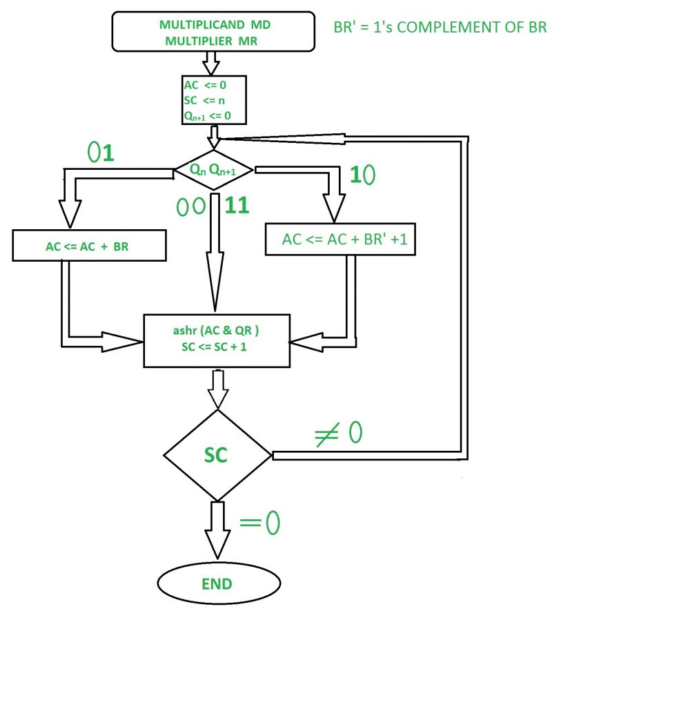

Booth algorithm gives a procedure for multiplying binary integers in signed 2’s complement representation in efficient way, i.e., less number of additions/subtractions required. It operates on the fact that strings of 0’s in the multiplier require no addition but just shifting and a string of 1’s in the multiplier from bit weight 2^k to weight 2^m can be treated as 2^(k+1 ) to 2^m.
As in all multiplication schemes, booth algorithm requires examination of the multiplier bits and shifting of the partial product. Prior to the shifting, the multiplicand may be added to the partial product, subtracted from the partial product, or left unchanged according to following rules:
- The multiplicand is subtracted from the partial product upon encountering the first least significant 1 in a string of 1’s in the multiplier
- The multiplier is added to the partial product upon encountering the first 0 (provided that there was a previous ‘1’) in a string of 0’s in the multiplier.
- The partial product does not change when the multiplier bit is identical to the previous multiplier bit.
Hardware Implementation of Booths Algorithm – The hardware implementation of booth algorithm requires the register configuration shown in figure below.

We name the register as A, B and Q, AC, BR and QR respectively. Qn designates the least significant bit of multiplier in the register QR. An extra flip-flop Qn+1is appended to QR to facilitate a double inspection of the multiplier. Qn+1 is appended to QR to facilitate a double inspection of the multiplier. The flowchart for booth algorithm is shown below.
Booth’s Algorithm Flowchart –

AC and the appended bit Qn+1 are initially cleared to 0 and the sequence SC is set to a number n equal to the number of bits in the multiplier. The two bits of the multiplier in Qn and Qn+1are inspected. If the two bits are equal to 10, it means that the first 1 in a string has been encountered. This requires a subtraction of the multiplicand from the partial product in AC. If the 2 bits are equal to 01, it means that the first 0 in a string of 0’s has n = been encountered. This requires the addition of the multiplicand to the partial product in AC.
When the two bits are equal, the partial product does not change. An overflow cannot occur because the addition and subtraction of the multiplicand follow each other. As a consequence, the 2 numbers that are added always have a opposite signs, a condition that excludes an overflow. The next step is to shift right the partial product and the multiplier (including Qn+1). This is an arithmetic shift right (ashr) operation which AC and QR ti the right and leaves the sign bit in AC unchanged. The sequence counter is decremented and the computational loop is repeated n times.
Example – A numerical example of booth’s algorithm is shown below for n = 4. It shows the step by step multiplication of -5 and -7.
MD = -5 = 1011, MD = 1011, MD'+1 = 0101 MR = -7 = 1001 The explanation of first step is as follows: Qn+1 AC = 0000, MR = 1001, Qn+1 = 0, SC = 4 Qn Qn+1 = 10 So, we do AC + (MD)'+1, which gives AC = 0101 On right shifting AC and MR, we get AC = 0010, MR = 1100 and Qn+1 = 1
| OPERATION | AC | MR | Qn+1 | SC |
|---|---|---|---|---|
| 0000 | 1001 | 0 | 4 | |
| AC + MD’ + 1 | 0101 | 1001 | 0 | |
| ASHR | 0010 | 1100 | 1 | 3 |
| AC + MD | 1101 | 1100 | 1 | |
| ASHR | 1110 | 1110 | 0 | 2 |
| ASHR | 1111 | 0111 | 0 | 1 |
| AC + MD’ + 1 | 0010 | 0011 | 1 | 0 |
Product is calculated as follows:
Product = AC MR Product = 0010 0011 = 35
GATE Practice Questions –
- GATE IT 2008 | Question 40
- GATE IT 2006 | Question 38
- GATE IT 2005 | Question 8
- GATE CS 1996 | Question 23